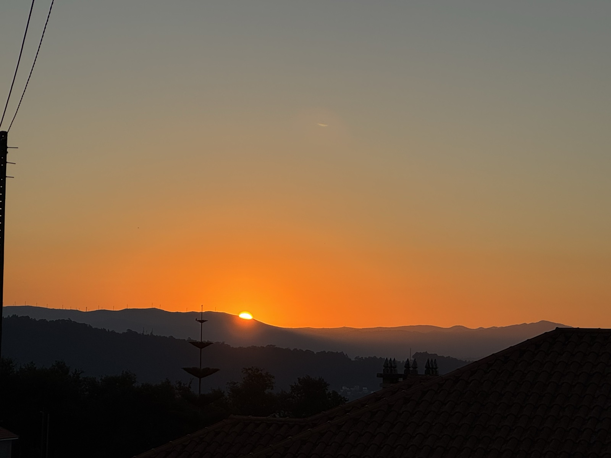
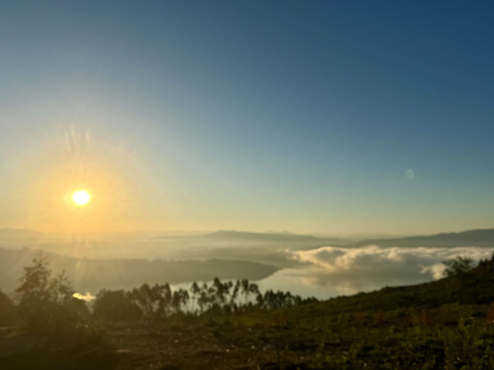
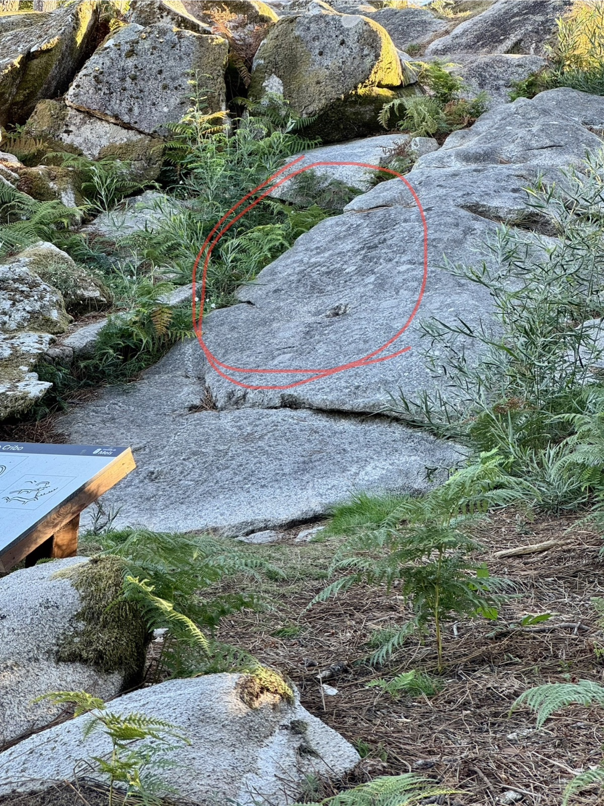
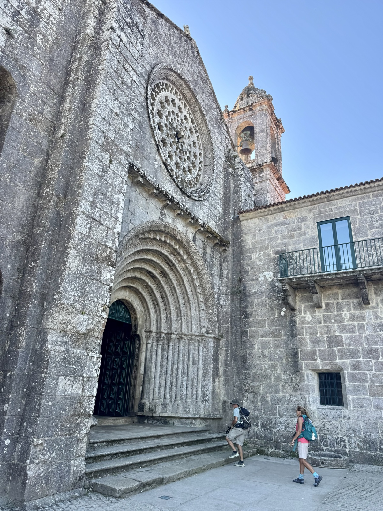
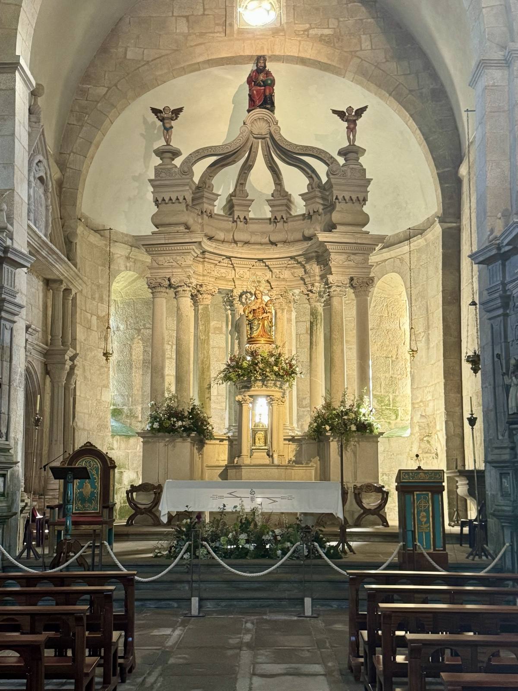

Stage 11: Combarro to Armenteira
Data: 6.68 miles, 1640 feet elevation gain, 2:40 moving time, 3:34 total time.
Hotel: O Legado De Ramira
A slow steady climb through winding cobblestone streets to watch the sun rise over the mountains and vineyards. It’s Gary’s 60th Birthday today. It seems rather dreamy to greet the sun as an escort into the 60s!


Lined with purple heather and bright yellow broom flora, the forest path was a soft and silky. Petroglyphs embedded in the granite rocks above the trail provided an extra curiosity. Thinking about how people thousands of years ago walked through the same forest and saw the same sunrise feels humbling and otherworldly.

As we reached the end of our hike, a medieval monastery lay before us nestled between a cafe and albergue. Still in use, the nuns make their own wine, skin creams, rosary beads, and liquor. So kind—offering stamps for our credentials—the nuns wore traditional habits I remember from my childhood.


Presently waiting for our transport to take us to our hotel, which is 10 miles away. We will stay there two night—a good opportunity to do laundry and enjoy a slightly easier morning without packing up our suitcases. Although, Claire and I can pack up and get out of a hotel room in 20 minutes flat. This is part of the Camino experience—keeping our needs/material items simple and organized while maintaining a good degree of comfort.